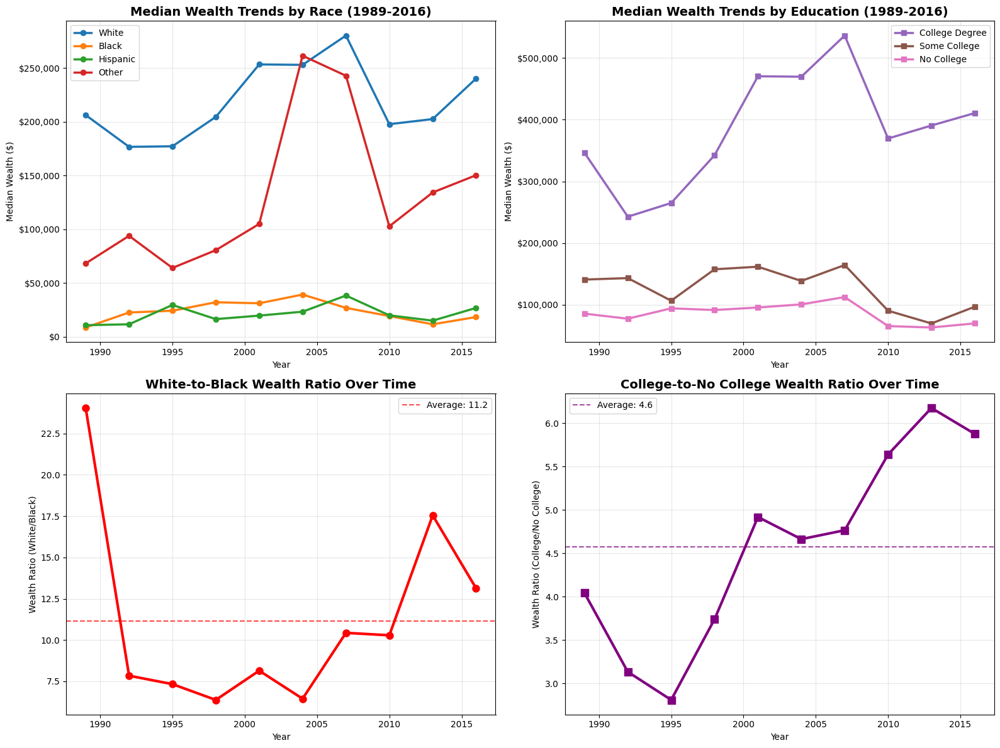
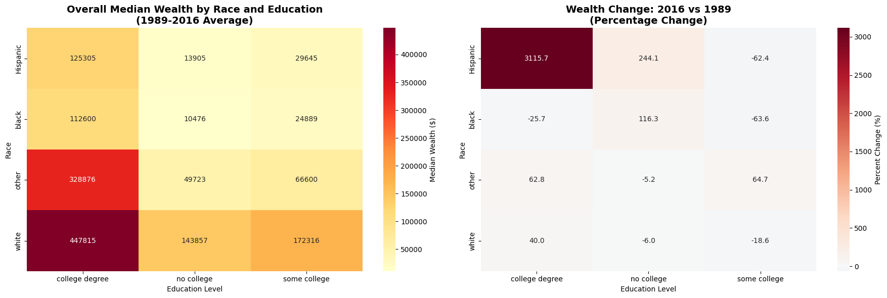
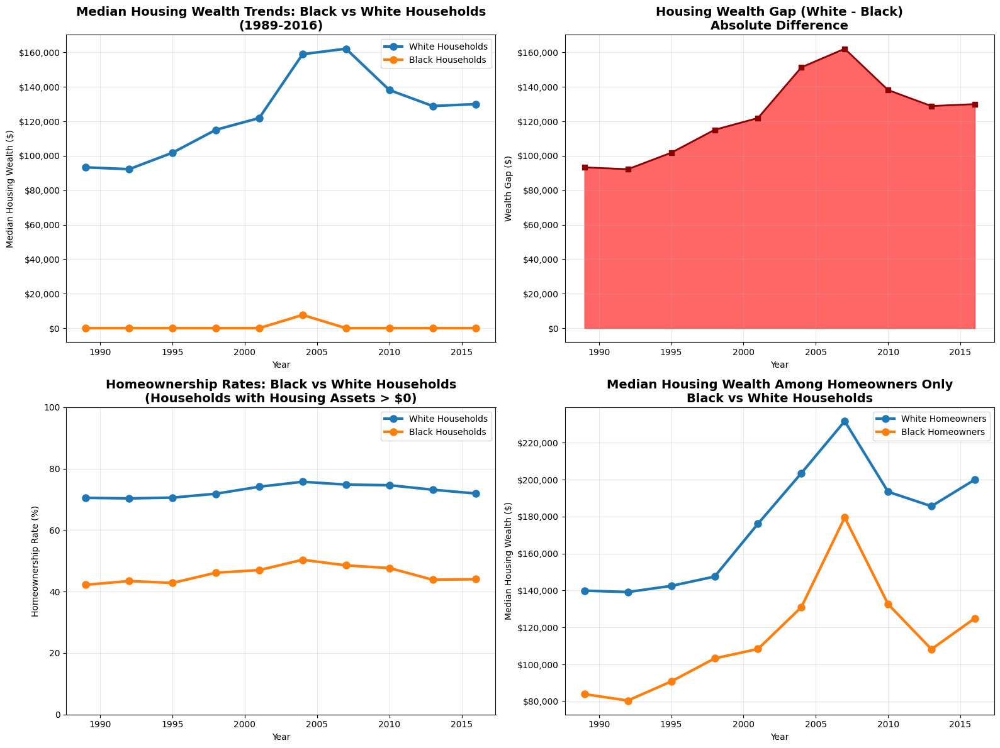
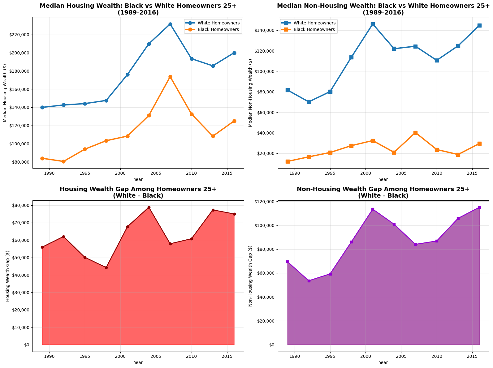

Housing Wealth Analysis: Black vs White Households (1989-2016)
import pandas as pddf = pd.read_csv(r'C:\Users\clint\Desktop\Booth RA\RA_21_22.csv')df
weight
year
age
sex
education
race
asset_total
asset_housing
debt_total
debt_housing
income
0
6859.959728
1989
35
female
no college
white
3731.72
0.00
1530.01
0.00
9737.17
1
7375.788638
1989
35
female
no college
black
0.00
0.00
0.00
0.00
11684.60
2
4193.294199
1989
40
male
no college
other
216439.77
139939.51
26681.80
18658.60
83739.63
3
4743.208024
1989
51
female
no college
black
40060.02
18658.60
26383.26
5597.58
19474.33
4
5971.319496
1989
28
male
no college
black
35675.24
33585.48
27987.90
20524.46
35053.80
...
...
...
...
...
...
...
...
...
...
...
...
47771
3033.103970
2016
43
male
some college
white
253300.00
0.00
96500.00
0.00
113415.28
47772
5721.988043
2016
67
male
some college
white
279400.00
120000.00
15000.00
0.00
109364.73
47773
4824.390087
2016
60
male
college degree
white
1500.00
0.00
35000.00
0.00
40505.46
47774
4132.549093
2016
48
female
no college
white
4430.00
0.00
100.00
0.00
23290.64
47775
4461.752118
2016
29
male
some college
white
92600.00
0.00
15900.00
0.00
21265.36
47776 rows × 11 columns
# COMPREHENSIVE DATA QUALITY ASSESSMENTprint("=== DATA QUALITY ASSESSMENT ===\n")# 1. Basic dataset informationprint("1. DATASET OVERVIEW:")print(f" Shape: {df.shape[0]:,} rows × {df.shape[1]} columns")print(f" Memory usage: {df.memory_usage(deep=True).sum() /1024**2:.2f} MB")print(f" Columns: {list(df.columns)}")# 2. Missing values analysisprint("\n2. MISSING VALUES CHECK:")missing_summary = df.isnull().sum()missing_pct = (df.isnull().sum() /len(df)) *100missing_df = pd.DataFrame({'Missing_Count': missing_summary,'Missing_Percentage': missing_pct})print(missing_df[missing_df['Missing_Count'] >0])if missing_df['Missing_Count'].sum() ==0:print(" ✓ No missing values found")# 3. Data types and value rangesprint("\n3. DATA TYPES AND RANGES:")for col in df.columns: dtype = df[col].dtypeif df[col].dtype in ['int64', 'float64']: min_val = df[col].min() max_val = df[col].max()print(f" {col}: {dtype} | Range: {min_val:,.2f} to {max_val:,.2f}")else: unique_count = df[col].nunique()print(f" {col}: {dtype} | {unique_count} unique values")# 4. Check for negative values in financial columnsprint("\n4. NEGATIVE VALUES CHECK:")financial_cols = ['weight', 'asset_total', 'asset_housing', 'debt_total', 'debt_housing', 'income', 'wealth']for col in financial_cols:if col in df.columns: negative_count = (df[col] <0).sum() negative_pct = (negative_count /len(df)) *100if negative_count >0:print(f" ⚠️ {col}: {negative_count:,} negative values ({negative_pct:.2f}%)")else:print(f" ✓ {col}: No negative values")# 5. Outlier detection using IQR methodprint("\n5. OUTLIER DETECTION (IQR Method):")for col in financial_cols:if col in df.columns and df[col].dtype in ['int64', 'float64']: Q1 = df[col].quantile(0.25) Q3 = df[col].quantile(0.75) IQR = Q3 - Q1 lower_bound = Q1 -1.5* IQR upper_bound = Q3 +1.5* IQR outliers = ((df[col] < lower_bound) | (df[col] > upper_bound)).sum() outlier_pct = (outliers /len(df)) *100print(f" {col}: {outliers:,} outliers ({outlier_pct:.1f}%) | Bounds: [{lower_bound:,.0f}, {upper_bound:,.0f}]")# 6. Categorical variables validationprint("\n6. CATEGORICAL VARIABLES:")categorical_cols = ['race', 'education', 'sex']for col in categorical_cols:if col in df.columns: value_counts = df[col].value_counts()print(f" {col}:")for value, count in value_counts.items(): pct = (count /len(df)) *100print(f" - {value}: {count:,} ({pct:.1f}%)")# 7. Year distributionprint("\n7. YEAR DISTRIBUTION:")if'year'in df.columns: year_counts = df['year'].value_counts().sort_index()for year, count in year_counts.items(): pct = (count /len(df)) *100print(f" {year}: {count:,} observations ({pct:.1f}%)")# 8. Logical consistency checksprint("\n8. LOGICAL CONSISTENCY CHECKS:")# Check if housing assets <= total assetsif'asset_housing'in df.columns and'asset_total'in df.columns: housing_gt_total = (df['asset_housing'] > df['asset_total']).sum()if housing_gt_total >0:print(f" ⚠️ {housing_gt_total:,} cases where housing assets > total assets")else:print(" ✓ Housing assets ≤ total assets for all cases")# Check if housing debt <= total debtif'debt_housing'in df.columns and'debt_total'in df.columns: housing_debt_gt_total = (df['debt_housing'] > df['debt_total']).sum()if housing_debt_gt_total >0:print(f" ⚠️ {housing_debt_gt_total:,} cases where housing debt > total debt")else:print(" ✓ Housing debt ≤ total debt for all cases")# Check if wealth calculation is consistentif'wealth'in df.columns: calculated_wealth = df['asset_total'] + df['asset_housing'] - df['debt_total'] - df['debt_housing'] wealth_inconsistent = (abs(df['wealth'] - calculated_wealth) >0.01).sum()if wealth_inconsistent >0:print(f" ⚠️ {wealth_inconsistent:,} cases with inconsistent wealth calculation")else:print(" ✓ Wealth calculation is consistent")# 9. Survey weights validationprint("\n9. SURVEY WEIGHTS VALIDATION:")if'weight'in df.columns: zero_weights = (df['weight'] ==0).sum() very_small_weights = (df['weight'] <1).sum() very_large_weights = (df['weight'] >50000).sum()print(f" Zero weights: {zero_weights:,}")print(f" Very small weights (<1): {very_small_weights:,}")print(f" Very large weights (>50K): {very_large_weights:,}")print(f" Weight statistics: Mean={df['weight'].mean():.1f}, Median={df['weight'].median():.1f}")# 10. Summaryprint("\n=== DATA QUALITY SUMMARY ===")issues_found = []if missing_df['Missing_Count'].sum() >0: issues_found.append("Missing values detected")ifany((df[col] <0).sum() >0for col in financial_cols if col in df.columns): issues_found.append("Negative values in financial columns")if'asset_housing'in df.columns and'asset_total'in df.columns:if (df['asset_housing'] > df['asset_total']).sum() >0: issues_found.append("Logical inconsistencies (housing > total assets)")if issues_found:print("⚠️ Issues found:")for issue in issues_found:print(f" - {issue}")else:print("✅ No major data quality issues detected!")print(f"\nDataset is ready for analysis with {len(df):,} observations.")
=== DATA QUALITY ASSESSMENT ===
1. DATASET OVERVIEW:
Shape: 47,776 rows × 11 columns
Memory usage: 10.60 MB
Columns: ['weight', 'year', 'age', 'sex', 'education', 'race', 'asset_total', 'asset_housing', 'debt_total', 'debt_housing', 'income']
2. MISSING VALUES CHECK:
Empty DataFrame
Columns: [Missing_Count, Missing_Percentage]
Index: []
✓ No missing values found
3. DATA TYPES AND RANGES:
weight: float64 | Range: 0.20 to 31,115.82
year: int64 | Range: 1,989.00 to 2,016.00
age: int64 | Range: 17.00 to 95.00
sex: object | 2 unique values
education: object | 3 unique values
race: object | 4 unique values
asset_total: float64 | Range: -22,487,306.62 to 2,928,346,179.67
asset_housing: float64 | Range: 0.00 to 182,642,128.63
debt_total: float64 | Range: 0.00 to 293,486,997.64
debt_housing: float64 | Range: 0.00 to 44,821,081.33
income: float64 | Range: 0.00 to 351,958,858.31
4. NEGATIVE VALUES CHECK:
✓ weight: No negative values
⚠️ asset_total: 7 negative values (0.01%)
✓ asset_housing: No negative values
✓ debt_total: No negative values
✓ debt_housing: No negative values
✓ income: No negative values
5. OUTLIER DETECTION (IQR Method):
weight: 330 outliers (0.7%) | Bounds: [-4,095, 12,858]
asset_total: 8,281 outliers (17.3%) | Bounds: [-2,215,818, 3,831,215]
asset_housing: 5,405 outliers (11.3%) | Bounds: [-651,383, 1,085,639]
debt_total: 5,091 outliers (10.7%) | Bounds: [-236,639, 394,398]
debt_housing: 5,033 outliers (10.5%) | Bounds: [-167,927, 279,879]
income: 7,542 outliers (15.8%) | Bounds: [-179,464, 385,518]
6. CATEGORICAL VARIABLES:
race:
- white: 37,044 (77.5%)
- black: 5,186 (10.9%)
- Hispanic: 3,553 (7.4%)
- other: 1,993 (4.2%)
education:
- college degree: 19,444 (40.7%)
- no college: 17,820 (37.3%)
- some college: 10,512 (22.0%)
sex:
- male: 37,212 (77.9%)
- female: 10,564 (22.1%)
7. YEAR DISTRIBUTION:
1989: 3,143 observations (6.6%)
1992: 3,906 observations (8.2%)
1995: 4,299 observations (9.0%)
1998: 4,305 observations (9.0%)
2001: 4,442 observations (9.3%)
2004: 4,519 observations (9.5%)
2007: 4,417 observations (9.2%)
2010: 6,482 observations (13.6%)
2013: 6,015 observations (12.6%)
2016: 6,248 observations (13.1%)
8. LOGICAL CONSISTENCY CHECKS:
⚠️ 13 cases where housing assets > total assets
✓ Housing debt ≤ total debt for all cases
9. SURVEY WEIGHTS VALIDATION:
Zero weights: 0
Very small weights (<1): 9
Very large weights (>50K): 0
Weight statistics: Mean=4568.5, Median=4709.3
=== DATA QUALITY SUMMARY ===
⚠️ Issues found:
- Negative values in financial columns
- Logical inconsistencies (housing > total assets)
Dataset is ready for analysis with 47,776 observations.
# DATA CLEANING STEP: Fix negative asset_total valuesprint("=== DATA CLEANING ===\n")# Check for negative asset_total values before cleaningnegative_asset_total = (df['asset_total'] <0).sum()print(f"Before cleaning: {negative_asset_total:,} negative asset_total values")if negative_asset_total >0:# Show some examples of negative valuesprint(f"Examples of negative asset_total values:") negative_examples = df[df['asset_total'] <0]['asset_total'].head(10)for i, val inenumerate(negative_examples):print(f" {i+1}. ${val:,.2f}")# Store original values for comparison original_asset_total = df['asset_total'].copy()# Set negative asset_total values to 0 df['asset_total'] = df['asset_total'].clip(lower=0)# Count how many values were changed changed_values = (original_asset_total != df['asset_total']).sum()print(f"\n✓ Changed {changed_values:,} negative asset_total values to 0")# Recalculate wealth column since asset_total changed df['wealth'] = df['asset_total'] + df['asset_housing'] - df['debt_total'] - df['debt_housing']print("✓ Recalculated wealth column with cleaned asset_total values")# Show new statisticsprint(f"\nAfter cleaning:")print(f" asset_total min: ${df['asset_total'].min():,.2f}")print(f" asset_total max: ${df['asset_total'].max():,.2f}")print(f" wealth min: ${df['wealth'].min():,.2f}")print(f" wealth max: ${df['wealth'].max():,.2f}")else:print("✓ No negative asset_total values found - no cleaning needed")print("\n=== DATA CLEANING COMPLETE ===")
=== DATA CLEANING ===
Before cleaning: 7 negative asset_total values
Examples of negative asset_total values:
1. $-3,165,711.49
2. $-5,869.74
3. $-22,487,306.62
4. $-14,548,494.22
5. $-2,422,608.83
6. $-6,198,904.77
7. $-2,100,875.73
✓ Changed 7 negative asset_total values to 0
✓ Recalculated wealth column with cleaned asset_total values
After cleaning:
asset_total min: $0.00
asset_total max: $2,928,346,179.67
wealth min: $-221,985,489.24
wealth max: $2,929,687,834.52
=== DATA CLEANING COMPLETE ===
# Create a new column 'wealth' using the specified formuladf['wealth'] = df['asset_total'] + df['asset_housing'] - df['debt_total'] - df['debt_housing']# Display the updated dataframe with the new wealth columnprint("New wealth column created with formula: asset_total + asset_housing - debt_total - debt_housing")print(f"Wealth statistics:")print(f" Mean: ${df['wealth'].mean():,.2f}")print(f" Median: ${df['wealth'].median():,.2f}")print(f" Min: ${df['wealth'].min():,.2f}")print(f" Max: ${df['wealth'].max():,.2f}")print(f"\nFirst few rows with wealth column:")df[['asset_total', 'asset_housing', 'debt_total', 'debt_housing', 'wealth']].head()
New wealth column created with formula: asset_total + asset_housing - debt_total - debt_housing
Wealth statistics:
Mean: $9,822,431.82
Median: $301,893.81
Min: $-221,985,489.24
Max: $2,929,687,834.52
First few rows with wealth column:
asset_total
asset_housing
debt_total
debt_housing
wealth
0
3731.72
0.00
1530.01
0.00
2201.71
1
0.00
0.00
0.00
0.00
0.00
2
216439.77
139939.51
26681.80
18658.60
311038.88
3
40060.02
18658.60
26383.26
5597.58
26737.78
4
35675.24
33585.48
27987.90
20524.46
20748.36
import matplotlib.pyplot as pltimport seaborn as snsimport numpy as npfrom scipy import statsimport warningswarnings.filterwarnings('ignore')# Set up plotting styleplt.style.use('default')sns.set_palette("husl")plt.rcParams['figure.figsize'] = (12, 8)plt.rcParams['font.size'] =10
def weighted_median(values, weights):"""Calculate weighted median"""# Remove NaN values mask =~(np.isnan(values) | np.isnan(weights)) values = values[mask] weights = weights[mask]iflen(values) ==0:return np.nan# Sort values and weights by values sorted_indices = np.argsort(values) sorted_values = values[sorted_indices] sorted_weights = weights[sorted_indices]# Calculate cumulative weights cumulative_weights = np.cumsum(sorted_weights) total_weight = cumulative_weights[-1]# Find the median median_weight = total_weight /2 median_index = np.searchsorted(cumulative_weights, median_weight)if median_index <len(sorted_values):if cumulative_weights[median_index] == median_weight:# Exact medianreturn (sorted_values[median_index] + sorted_values[median_index +1]) /2else:return sorted_values[median_index]else:return sorted_values[-1]# Test the functionprint("Weighted median function created successfully!")
Weighted median function created successfully!
# Calculate weighted median wealth by race and yearwealth_by_race_year = []for year insorted(df['year'].unique()):for race in df['race'].unique(): subset = df[(df['year'] == year) & (df['race'] == race)]iflen(subset) >0: weighted_med = weighted_median(subset['wealth'].values, subset['weight'].values) wealth_by_race_year.append({'year': year,'race': race,'weighted_median_wealth': weighted_med,'sample_size': len(subset) })wealth_by_race_df = pd.DataFrame(wealth_by_race_year)print("Weighted median wealth by race and year:")print(wealth_by_race_df.pivot(index='year', columns='race', values='weighted_median_wealth').round(0))
Weighted median wealth by race and year:
race Hispanic black other white
year
1989 10710.0 8583.0 68234.0 206364.0
1992 11572.0 22540.0 93916.0 176763.0
1995 29566.0 24179.0 64018.0 177272.0
1998 16378.0 32091.0 80560.0 204646.0
2001 19645.0 31121.0 105001.0 253493.0
2004 23274.0 39234.0 261606.0 253085.0
2007 38330.0 26866.0 242952.0 280379.0
2010 19896.0 19233.0 102797.0 197854.0
2013 14951.0 11548.0 134301.0 202622.0
2016 26800.0 18300.0 150350.0 240350.0
# Calculate weighted median wealth by education and yearwealth_by_edu_year = []for year insorted(df['year'].unique()):for education in df['education'].unique(): subset = df[(df['year'] == year) & (df['education'] == education)]iflen(subset) >0: weighted_med = weighted_median(subset['wealth'].values, subset['weight'].values) wealth_by_edu_year.append({'year': year,'education': education,'weighted_median_wealth': weighted_med,'sample_size': len(subset) })wealth_by_edu_df = pd.DataFrame(wealth_by_edu_year)print("Weighted median wealth by education and year:")print(wealth_by_edu_df.pivot(index='year', columns='education', values='weighted_median_wealth').round(0))
Weighted median wealth by education and year:
education college degree no college some college
year
1989 346490.0 85699.0 140928.0
1992 242806.0 77481.0 143289.0
1995 264999.0 94289.0 106661.0
1998 342454.0 91552.0 157579.0
2001 470404.0 95652.0 161769.0
2004 469669.0 100725.0 138688.0
2007 536393.0 112559.0 164473.0
2010 369556.0 65546.0 90416.0
2013 390562.0 63258.0 69816.0
2016 410800.0 69921.0 96905.0
# Create comprehensive visualizationsfig, ((ax1, ax2), (ax3, ax4)) = plt.subplots(2, 2, figsize=(16, 12))# Plot 1: Wealth trends by racepivot_race = wealth_by_race_df.pivot(index='year', columns='race', values='weighted_median_wealth')colors = ['#1f77b4', '#ff7f0e', '#2ca02c', '#d62728']for i, race inenumerate(['white', 'black', 'Hispanic', 'other']):if race in pivot_race.columns: ax1.plot(pivot_race.index, pivot_race[race], marker='o', linewidth=2.5, label=race.title(), color=colors[i], markersize=6)ax1.set_title('Median Wealth Trends by Race (1989-2016)', fontsize=14, fontweight='bold')ax1.set_xlabel('Year')ax1.set_ylabel('Median Wealth ($)')ax1.legend()ax1.grid(True, alpha=0.3)ax1.yaxis.set_major_formatter(plt.FuncFormatter(lambda x, p: f'${x:,.0f}'))# Plot 2: Wealth trends by educationpivot_edu = wealth_by_edu_df.pivot(index='year', columns='education', values='weighted_median_wealth')edu_colors = ['#9467bd', '#8c564b', '#e377c2']edu_order = ['college degree', 'some college', 'no college']for i, edu inenumerate(edu_order):if edu in pivot_edu.columns: ax2.plot(pivot_edu.index, pivot_edu[edu], marker='s', linewidth=2.5, label=edu.title(), color=edu_colors[i], markersize=6)ax2.set_title('Median Wealth Trends by Education (1989-2016)', fontsize=14, fontweight='bold')ax2.set_xlabel('Year')ax2.set_ylabel('Median Wealth ($)')ax2.legend()ax2.grid(True, alpha=0.3)ax2.yaxis.set_major_formatter(plt.FuncFormatter(lambda x, p: f'${x:,.0f}'))# Plot 3: Wealth gap ratios over time (White/Black)white_black_ratio = pivot_race['white'] / pivot_race['black']ax3.plot(white_black_ratio.index, white_black_ratio.values, marker='o', linewidth=3, color='red', markersize=8)ax3.set_title('White-to-Black Wealth Ratio Over Time', fontsize=14, fontweight='bold')ax3.set_xlabel('Year')ax3.set_ylabel('Wealth Ratio (White/Black)')ax3.grid(True, alpha=0.3)ax3.axhline(y=white_black_ratio.mean(), color='red', linestyle='--', alpha=0.7, label=f'Average: {white_black_ratio.mean():.1f}')ax3.legend()# Plot 4: Education gap (College/No College)college_no_college_ratio = pivot_edu['college degree'] / pivot_edu['no college']ax4.plot(college_no_college_ratio.index, college_no_college_ratio.values, marker='s', linewidth=3, color='purple', markersize=8)ax4.set_title('College-to-No College Wealth Ratio Over Time', fontsize=14, fontweight='bold')ax4.set_xlabel('Year')ax4.set_ylabel('Wealth Ratio (College/No College)')ax4.grid(True, alpha=0.3)ax4.axhline(y=college_no_college_ratio.mean(), color='purple', linestyle='--', alpha=0.7, label=f'Average: {college_no_college_ratio.mean():.1f}')ax4.legend()plt.tight_layout()plt.show()

# Create heatmap showing wealth by race and education over timefig, (ax1, ax2) = plt.subplots(1, 2, figsize=(18, 6))# Prepare data for heatmap - Average wealth by race and educationheatmap_data = []for race in df['race'].unique():for education in df['education'].unique(): subset = df[(df['race'] == race) & (df['education'] == education)]iflen(subset) >0: weighted_med = weighted_median(subset['wealth'].values, subset['weight'].values) heatmap_data.append({'race': race,'education': education,'weighted_median_wealth': weighted_med })heatmap_df = pd.DataFrame(heatmap_data)heatmap_pivot = heatmap_df.pivot(index='race', columns='education', values='weighted_median_wealth')# Heatmap 1: Overall wealth by race and educationsns.heatmap(heatmap_pivot, annot=True, fmt='.0f', cmap='YlOrRd', ax=ax1, cbar_kws={'label': 'Median Wealth ($)'})ax1.set_title('Overall Median Wealth by Race and Education\n(1989-2016 Average)', fontsize=14, fontweight='bold')ax1.set_ylabel('Race')ax1.set_xlabel('Education Level')# Create wealth change comparison (2016 vs 1989)early_data = df[df['year'] ==1989]recent_data = df[df['year'] ==2016]change_data = []for race in df['race'].unique():for education in df['education'].unique(): early_subset = early_data[(early_data['race'] == race) & (early_data['education'] == education)] recent_subset = recent_data[(recent_data['race'] == race) & (recent_data['education'] == education)]iflen(early_subset) >0andlen(recent_subset) >0: early_wealth = weighted_median(early_subset['wealth'].values, early_subset['weight'].values) recent_wealth = weighted_median(recent_subset['wealth'].values, recent_subset['weight'].values)ifnot np.isnan(early_wealth) andnot np.isnan(recent_wealth): pct_change = ((recent_wealth - early_wealth) / early_wealth) *100 change_data.append({'race': race,'education': education,'percent_change': pct_change })change_df = pd.DataFrame(change_data)change_pivot = change_df.pivot(index='race', columns='education', values='percent_change')# Heatmap 2: Percentage change in wealth (2016 vs 1989)sns.heatmap(change_pivot, annot=True, fmt='.1f', cmap='RdBu_r', center=0, ax=ax2, cbar_kws={'label': 'Percent Change (%)'})ax2.set_title('Wealth Change: 2016 vs 1989\n(Percentage Change)', fontsize=14, fontweight='bold')ax2.set_ylabel('Race')ax2.set_xlabel('Education Level')plt.tight_layout()plt.show()

# Quantitative Analysis of Trendsprint("=== QUANTITATIVE TREND ANALYSIS ===\n")# Calculate compound annual growth rates (CAGR) for each groupdef calculate_cagr(start_value, end_value, years):if start_value <=0or end_value <=0:return np.nanreturn ((end_value / start_value) ** (1/years) -1) *100years_span =2016-1989print("1. COMPOUND ANNUAL GROWTH RATES (1989-2016):")print(" Race Groups:")for race in ['white', 'black', 'Hispanic', 'other']: start_val = pivot_race.loc[1989, race] if race in pivot_race.columns else np.nan end_val = pivot_race.loc[2016, race] if race in pivot_race.columns else np.nan cagr = calculate_cagr(start_val, end_val, years_span)print(f" - {race.title()}: {cagr:.2f}% per year")print("\n Education Groups:")for edu in ['college degree', 'some college', 'no college']: start_val = pivot_edu.loc[1989, edu] if edu in pivot_edu.columns else np.nan end_val = pivot_edu.loc[2016, edu] if edu in pivot_edu.columns else np.nan cagr = calculate_cagr(start_val, end_val, years_span)print(f" - {edu.title()}: {cagr:.2f}% per year")# Gap analysisprint("\n2. WEALTH GAP ANALYSIS:")white_black_1989 = pivot_race.loc[1989, 'white'] / pivot_race.loc[1989, 'black']white_black_2016 = pivot_race.loc[2016, 'white'] / pivot_race.loc[2016, 'black']print(f" White-to-Black Ratio: {white_black_1989:.1f} (1989) → {white_black_2016:.1f} (2016)")college_no_college_1989 = pivot_edu.loc[1989, 'college degree'] / pivot_edu.loc[1989, 'no college']college_no_college_2016 = pivot_edu.loc[2016, 'college degree'] / pivot_edu.loc[2016, 'no college']print(f" College-to-No College Ratio: {college_no_college_1989:.1f} (1989) → {college_no_college_2016:.1f} (2016)")# Volatility analysis (coefficient of variation)print("\n3. WEALTH VOLATILITY (Coefficient of Variation):")print(" Race Groups:")for race in ['white', 'black', 'Hispanic', 'other']:if race in pivot_race.columns: cv = (pivot_race[race].std() / pivot_race[race].mean()) *100print(f" - {race.title()}: {cv:.1f}%")print("\n Education Groups:")for edu in ['college degree', 'some college', 'no college']:if edu in pivot_edu.columns: cv = (pivot_edu[edu].std() / pivot_edu[edu].mean()) *100print(f" - {edu.title()}: {cv:.1f}%")# Crisis impact analysis (2007-2010)print("\n4. FINANCIAL CRISIS IMPACT (2007-2010):")print(" Race Groups:")for race in ['white', 'black', 'Hispanic', 'other']:if race in pivot_race.columns: crisis_decline = ((pivot_race.loc[2010, race] - pivot_race.loc[2007, race]) / pivot_race.loc[2007, race]) *100print(f" - {race.title()}: {crisis_decline:.1f}%")print("\n Education Groups:")for edu in ['college degree', 'some college', 'no college']:if edu in pivot_edu.columns: crisis_decline = ((pivot_edu.loc[2010, edu] - pivot_edu.loc[2007, edu]) / pivot_edu.loc[2007, edu]) *100print(f" - {edu.title()}: {crisis_decline:.1f}%")print("\n=== END ANALYSIS ===")
=== QUANTITATIVE TREND ANALYSIS ===
1. COMPOUND ANNUAL GROWTH RATES (1989-2016):
Race Groups:
- White: 0.57% per year
- Black: 2.84% per year
- Hispanic: 3.46% per year
- Other: 2.97% per year
Education Groups:
- College Degree: 0.63% per year
- Some College: -1.38% per year
- No College: -0.75% per year
2. WEALTH GAP ANALYSIS:
White-to-Black Ratio: 24.0 (1989) → 13.1 (2016)
College-to-No College Ratio: 4.0 (1989) → 5.9 (2016)
3. WEALTH VOLATILITY (Coefficient of Variation):
Race Groups:
- White: 16.1%
- Black: 40.4%
- Hispanic: 40.8%
- Other: 53.5%
Education Groups:
- College Degree: 23.9%
- Some College: 26.3%
- No College: 19.0%
4. FINANCIAL CRISIS IMPACT (2007-2010):
Race Groups:
- White: -29.4%
- Black: -28.4%
- Hispanic: -48.1%
- Other: -57.7%
Education Groups:
- College Degree: -31.1%
- Some College: -45.0%
- No College: -41.8%
=== END ANALYSIS ===
This section focuses specifically on median housing wealth trends for Black and White households, using weighted medians to ensure population-representative results.
# Calculate weighted median housing wealth by race and year (Black and White only)housing_wealth_by_race = []# Focus on Black and White households onlytarget_races = ['black', 'white']for year insorted(df['year'].unique()):for race in target_races: subset = df[(df['year'] == year) & (df['race'] == race)]iflen(subset) >0:# Use asset_housing for housing wealth weighted_med_housing = weighted_median(subset['asset_housing'].values, subset['weight'].values) housing_wealth_by_race.append({'year': year,'race': race,'weighted_median_housing_wealth': weighted_med_housing,'sample_size': len(subset) })housing_wealth_df = pd.DataFrame(housing_wealth_by_race)housing_pivot = housing_wealth_df.pivot(index='year', columns='race', values='weighted_median_housing_wealth')print("Weighted median housing wealth by race and year (Black vs White):")print(housing_pivot.round(0))print(f"\nData covers {len(df)} total observations from {df['year'].min()} to {df['year'].max()}")print(f"Analysis focuses on {len(df[df['race'].isin(target_races)])} Black and White households")
Weighted median housing wealth by race and year (Black vs White):
race black white
year
1989 0.0 93293.0
1992 0.0 92239.0
1995 0.0 101790.0
1998 0.0 115086.0
2001 0.0 121937.0
2004 7631.0 158973.0
2007 0.0 162122.0
2010 0.0 138166.0
2013 0.0 128888.0
2016 0.0 130000.0
Data covers 47776 total observations from 1989 to 2016
Analysis focuses on 42230 Black and White households
# Create comprehensive visualizations for housing wealthfig, ((ax1, ax2), (ax3, ax4)) = plt.subplots(2, 2, figsize=(16, 12))# Plot 1: Housing wealth trends by racecolors_race = ['#1f77b4', '#ff7f0e'] # Blue for White, Orange for Blackfor i, race inenumerate(['white', 'black']):if race in housing_pivot.columns: ax1.plot(housing_pivot.index, housing_pivot[race], marker='o', linewidth=3, label=f'{race.title()} Households', color=colors_race[i], markersize=8)ax1.set_title('Median Housing Wealth Trends: Black vs White Households\n(1989-2016)', fontsize=14, fontweight='bold')ax1.set_xlabel('Year')ax1.set_ylabel('Median Housing Wealth ($)')ax1.legend()ax1.grid(True, alpha=0.3)ax1.yaxis.set_major_formatter(plt.FuncFormatter(lambda x, p: f'${x:,.0f}'))# Plot 2: Housing wealth gap (absolute difference)white_housing = housing_pivot['white']black_housing = housing_pivot['black']housing_gap = white_housing - black_housingax2.fill_between(housing_gap.index, 0, housing_gap.values, alpha=0.6, color='red')ax2.plot(housing_gap.index, housing_gap.values, marker='s', linewidth=2, color='darkred', markersize=6)ax2.set_title('Housing Wealth Gap (White - Black)\nAbsolute Difference', fontsize=14, fontweight='bold')ax2.set_xlabel('Year')ax2.set_ylabel('Wealth Gap ($)')ax2.grid(True, alpha=0.3)ax2.yaxis.set_major_formatter(plt.FuncFormatter(lambda x, p: f'${x:,.0f}'))# Plot 3: Homeownership rates (implied from zero housing wealth)# Calculate percentage with zero housing wealth as proxy for non-homeownershiphomeownership_data = []for year insorted(df['year'].unique()):for race in ['black', 'white']: subset = df[(df['year'] == year) & (df['race'] == race)]iflen(subset) >0:# Calculate weighted percentage with housing wealth > 0 has_housing = subset['asset_housing'] >0 weighted_homeownership = np.average(has_housing, weights=subset['weight']) *100 homeownership_data.append({'year': year,'race': race,'homeownership_rate': weighted_homeownership })homeownership_df = pd.DataFrame(homeownership_data)homeownership_pivot = homeownership_df.pivot(index='year', columns='race', values='homeownership_rate')for i, race inenumerate(['white', 'black']):if race in homeownership_pivot.columns: ax3.plot(homeownership_pivot.index, homeownership_pivot[race], marker='o', linewidth=3, label=f'{race.title()} Households', color=colors_race[i], markersize=8)ax3.set_title('Homeownership Rates: Black vs White Households\n(Households with Housing Assets > $0)', fontsize=14, fontweight='bold')ax3.set_xlabel('Year')ax3.set_ylabel('Homeownership Rate (%)')ax3.legend()ax3.grid(True, alpha=0.3)ax3.set_ylim(0, 100)# Plot 4: Housing wealth among homeowners onlyhomeowner_housing_data = []for year insorted(df['year'].unique()):for race in ['black', 'white']:# Filter to only those with housing assets > 0 subset = df[(df['year'] == year) & (df['race'] == race) & (df['asset_housing'] >0)]iflen(subset) >0: weighted_med_housing = weighted_median(subset['asset_housing'].values, subset['weight'].values) homeowner_housing_data.append({'year': year,'race': race,'median_housing_wealth_homeowners': weighted_med_housing,'homeowner_sample_size': len(subset) })homeowner_housing_df = pd.DataFrame(homeowner_housing_data)homeowner_pivot = homeowner_housing_df.pivot(index='year', columns='race', values='median_housing_wealth_homeowners')for i, race inenumerate(['white', 'black']):if race in homeowner_pivot.columns: ax4.plot(homeowner_pivot.index, homeowner_pivot[race], marker='o', linewidth=3, label=f'{race.title()} Homeowners', color=colors_race[i], markersize=8)ax4.set_title('Median Housing Wealth Among Homeowners Only\nBlack vs White Households', fontsize=14, fontweight='bold')ax4.set_xlabel('Year')ax4.set_ylabel('Median Housing Wealth ($)')ax4.legend()ax4.grid(True, alpha=0.3)ax4.yaxis.set_major_formatter(plt.FuncFormatter(lambda x, p: f'${x:,.0f}'))plt.tight_layout()plt.show()print("Homeownership rates by race and year:")print(homeownership_pivot.round(1))

Homeownership rates by race and year:
race black white
year
1989 42.2 70.5
1992 43.4 70.3
1995 42.8 70.6
1998 46.1 71.8
2001 47.0 74.1
2004 50.4 75.7
2007 48.5 74.8
2010 47.7 74.6
2013 43.9 73.2
2016 44.0 71.9
# Quantitative Analysis of Housing Wealth Trendsprint("=== HOUSING WEALTH ANALYSIS: BLACK vs WHITE HOUSEHOLDS ===\n")# Calculate key statisticsprint("1. MEDIAN HOUSING WEALTH AMONG ALL HOUSEHOLDS:")print(" White households (1989):", f"${housing_pivot.loc[1989, 'white']:,.0f}")print(" White households (2016):", f"${housing_pivot.loc[2016, 'white']:,.0f}")print(" Black households (1989):", f"${housing_pivot.loc[1989, 'black']:,.0f}")print(" Black households (2016):", f"${housing_pivot.loc[2016, 'black']:,.0f}")# CAGR for housing wealthwhite_housing_cagr = calculate_cagr(housing_pivot.loc[1989, 'white'], housing_pivot.loc[2016, 'white'], years_span)print(f"\n White Housing Wealth CAGR: {white_housing_cagr:.2f}% per year")# Since Black median is mostly 0, calculate differentlyblack_housing_values = housing_pivot['black'].dropna()black_positive_years = black_housing_values[black_housing_values >0]print(f" Black households had positive median housing wealth in {len(black_positive_years)} of {len(black_housing_values)} years")print("\n2. HOMEOWNERSHIP RATES:")print(" White households:")print(f" 1989: {homeownership_pivot.loc[1989, 'white']:.1f}%")print(f" 2016: {homeownership_pivot.loc[2016, 'white']:.1f}%")print(f" Average: {homeownership_pivot['white'].mean():.1f}%")print(" Black households:")print(f" 1989: {homeownership_pivot.loc[1989, 'black']:.1f}%")print(f" 2016: {homeownership_pivot.loc[2016, 'black']:.1f}%")print(f" Average: {homeownership_pivot['black'].mean():.1f}%")# Homeownership gaphomeownership_gap = homeownership_pivot['white'] - homeownership_pivot['black']print(f"\n Homeownership Gap (White - Black):")print(f" 1989: {homeownership_gap.loc[1989]:.1f} percentage points")print(f" 2016: {homeownership_gap.loc[2016]:.1f} percentage points")print(f" Average: {homeownership_gap.mean():.1f} percentage points")print("\n3. MEDIAN HOUSING WEALTH AMONG HOMEOWNERS ONLY:")print(" White homeowners:")print(f" 1989: ${homeowner_pivot.loc[1989, 'white']:,.0f}")print(f" 2016: ${homeowner_pivot.loc[2016, 'white']:,.0f}")print(" Black homeowners:")print(f" 1989: ${homeowner_pivot.loc[1989, 'black']:,.0f}")print(f" 2016: ${homeowner_pivot.loc[2016, 'black']:,.0f}")# Calculate ratio among homeownershomeowner_ratio_1989 = homeowner_pivot.loc[1989, 'white'] / homeowner_pivot.loc[1989, 'black']homeowner_ratio_2016 = homeowner_pivot.loc[2016, 'white'] / homeowner_pivot.loc[2016, 'black']print(f"\n White-to-Black Housing Wealth Ratio (among homeowners):")print(f" 1989: {homeowner_ratio_1989:.1f}")print(f" 2016: {homeowner_ratio_2016:.1f}")# Housing wealth volatilityprint("\n4. HOUSING WEALTH VOLATILITY (Coefficient of Variation):")white_housing_cv = (housing_pivot['white'].std() / housing_pivot['white'].mean()) *100print(f" White households: {white_housing_cv:.1f}%")# For Black households, calculate CV among homeowners since median is often 0black_homeowner_cv = (homeowner_pivot['black'].std() / homeowner_pivot['black'].mean()) *100print(f" Black homeowners: {black_homeowner_cv:.1f}%")print("\n=== END HOUSING WEALTH ANALYSIS ===")
=== HOUSING WEALTH ANALYSIS: BLACK vs WHITE HOUSEHOLDS ===
1. MEDIAN HOUSING WEALTH AMONG ALL HOUSEHOLDS:
White households (1989): $93,293
White households (2016): $130,000
Black households (1989): $0
Black households (2016): $0
White Housing Wealth CAGR: 1.24% per year
Black households had positive median housing wealth in 1 of 10 years
2. HOMEOWNERSHIP RATES:
White households:
1989: 70.5%
2016: 71.9%
Average: 72.8%
Black households:
1989: 42.2%
2016: 44.0%
Average: 45.6%
Homeownership Gap (White - Black):
1989: 28.3 percentage points
2016: 27.9 percentage points
Average: 27.2 percentage points
3. MEDIAN HOUSING WEALTH AMONG HOMEOWNERS ONLY:
White homeowners:
1989: $139,940
2016: $200,000
Black homeowners:
1989: $83,964
2016: $125,000
White-to-Black Housing Wealth Ratio (among homeowners):
1989: 1.7
2016: 1.6
4. HOUSING WEALTH VOLATILITY (Coefficient of Variation):
White households: 19.8%
Black homeowners: 25.7%
=== END HOUSING WEALTH ANALYSIS ===
# HOMEOWNERS AGED 25+ ANALYSIS: Housing vs Non-Housing Wealthprint("=== HOMEOWNERS AGED 25+ WEALTH ANALYSIS ===\n")# Filter to homeowners aged 25 or older (those with housing assets > 0 and age >= 25)homeowners_25plus = df[(df['asset_housing'] >0) & (df['age'] >=25)].copy()print(f"Filtered dataset: {len(homeowners_25plus):,} homeowners aged 25+ out of {len(df):,} total observations")print(f"Represents {len(homeowners_25plus)/len(df)*100:.1f}% of the full dataset")# Create non-housing wealth variablehomeowners_25plus['non_housing_wealth'] = homeowners_25plus['asset_total'] - homeowners_25plus['asset_housing'] - homeowners_25plus['debt_total'] + homeowners_25plus['debt_housing']print(f"\nRace distribution among homeowners 25+:")race_dist = homeowners_25plus.groupby('race').size().sort_values(ascending=False)for race, count in race_dist.items(): pct = (count /len(homeowners_25plus)) *100print(f" {race.title()}: {count:,} ({pct:.1f}%)")# Focus on Black and White homeowners for detailed analysistarget_races = ['black', 'white']bw_homeowners = homeowners_25plus[homeowners_25plus['race'].isin(target_races)].copy()print(f"\nBlack and White homeowners 25+: {len(bw_homeowners):,} observations")# Calculate median housing and non-housing wealth by race and yearhousing_nonhousing_data = []for year insorted(bw_homeowners['year'].unique()):for race in target_races: subset = bw_homeowners[(bw_homeowners['year'] == year) & (bw_homeowners['race'] == race)]iflen(subset) >0:# Housing wealth housing_wealth_med = weighted_median(subset['asset_housing'].values, subset['weight'].values)# Non-housing wealth nonhousing_wealth_med = weighted_median(subset['non_housing_wealth'].values, subset['weight'].values) housing_nonhousing_data.append({'year': year,'race': race,'median_housing_wealth': housing_wealth_med,'median_nonhousing_wealth': nonhousing_wealth_med,'sample_size': len(subset) })hn_df = pd.DataFrame(housing_nonhousing_data)# Create pivot tableshousing_pivot_owners = hn_df.pivot(index='year', columns='race', values='median_housing_wealth')nonhousing_pivot_owners = hn_df.pivot(index='year', columns='race', values='median_nonhousing_wealth')print("\n1. MEDIAN HOUSING WEALTH AMONG HOMEOWNERS 25+ (by race and year):")print(housing_pivot_owners.round(0))print("\n2. MEDIAN NON-HOUSING WEALTH AMONG HOMEOWNERS 25+ (by race and year):")print(nonhousing_pivot_owners.round(0))
=== HOMEOWNERS AGED 25+ WEALTH ANALYSIS ===
Filtered dataset: 33,292 homeowners aged 25+ out of 47,776 total observations
Represents 69.7% of the full dataset
Race distribution among homeowners 25+:
White: 28,370 (85.2%)
Black: 2,105 (6.3%)
Hispanic: 1,570 (4.7%)
Other: 1,247 (3.7%)
Black and White homeowners 25+: 30,475 observations
1. MEDIAN HOUSING WEALTH AMONG HOMEOWNERS 25+ (by race and year):
race black white
year
1989 83964.0 139940.0
1992 80499.0 142551.0
1995 93960.0 144072.0
1998 103282.0 147546.0
2001 108388.0 176131.0
2004 130994.0 209844.0
2007 173702.0 231603.0
2010 132639.0 193433.0
2013 108266.0 185599.0
2016 125000.0 200000.0
2. MEDIAN NON-HOUSING WEALTH AMONG HOMEOWNERS 25+ (by race and year):
race black white
year
1989 12128.0 81725.0
1992 16603.0 70185.0
1995 20828.0 80179.0
1998 27517.0 113758.0
2001 32462.0 146053.0
2004 20984.0 121964.0
2007 40299.0 124371.0
2010 23720.0 110643.0
2013 18869.0 124764.0
2016 29540.0 144730.0
# Create comprehensive visualizations for homeowners 25+fig, ((ax1, ax2), (ax3, ax4)) = plt.subplots(2, 2, figsize=(16, 12))# Plot 1: Housing wealth trends for homeowners 25+colors_race = ['#1f77b4', '#ff7f0e'] # Blue for White, Orange for Blackfor i, race inenumerate(['white', 'black']):if race in housing_pivot_owners.columns: ax1.plot(housing_pivot_owners.index, housing_pivot_owners[race], marker='o', linewidth=3, label=f'{race.title()} Homeowners', color=colors_race[i], markersize=8)ax1.set_title('Median Housing Wealth: Black vs White Homeowners 25+\n(1989-2016)', fontsize=14, fontweight='bold')ax1.set_xlabel('Year')ax1.set_ylabel('Median Housing Wealth ($)')ax1.legend()ax1.grid(True, alpha=0.3)ax1.yaxis.set_major_formatter(plt.FuncFormatter(lambda x, p: f'${x:,.0f}'))# Plot 2: Non-housing wealth trends for homeowners 25+for i, race inenumerate(['white', 'black']):if race in nonhousing_pivot_owners.columns: ax2.plot(nonhousing_pivot_owners.index, nonhousing_pivot_owners[race], marker='s', linewidth=3, label=f'{race.title()} Homeowners', color=colors_race[i], markersize=8)ax2.set_title('Median Non-Housing Wealth: Black vs White Homeowners 25+\n(1989-2016)', fontsize=14, fontweight='bold')ax2.set_xlabel('Year')ax2.set_ylabel('Median Non-Housing Wealth ($)')ax2.legend()ax2.grid(True, alpha=0.3)ax2.yaxis.set_major_formatter(plt.FuncFormatter(lambda x, p: f'${x:,.0f}'))# Plot 3: Housing wealth gap between raceshousing_gap_owners = housing_pivot_owners['white'] - housing_pivot_owners['black']ax3.fill_between(housing_gap_owners.index, 0, housing_gap_owners.values, alpha=0.6, color='red')ax3.plot(housing_gap_owners.index, housing_gap_owners.values, marker='o', linewidth=2, color='darkred', markersize=6)ax3.set_title('Housing Wealth Gap Among Homeowners 25+\n(White - Black)', fontsize=14, fontweight='bold')ax3.set_xlabel('Year')ax3.set_ylabel('Housing Wealth Gap ($)')ax3.grid(True, alpha=0.3)ax3.yaxis.set_major_formatter(plt.FuncFormatter(lambda x, p: f'${x:,.0f}'))# Plot 4: Non-housing wealth gap between racesnonhousing_gap_owners = nonhousing_pivot_owners['white'] - nonhousing_pivot_owners['black']ax4.fill_between(nonhousing_gap_owners.index, 0, nonhousing_gap_owners.values, alpha=0.6, color='purple')ax4.plot(nonhousing_gap_owners.index, nonhousing_gap_owners.values, marker='s', linewidth=2, color='darkviolet', markersize=6)ax4.set_title('Non-Housing Wealth Gap Among Homeowners 25+\n(White - Black)', fontsize=14, fontweight='bold')ax4.set_xlabel('Year')ax4.set_ylabel('Non-Housing Wealth Gap ($)')ax4.grid(True, alpha=0.3)ax4.yaxis.set_major_formatter(plt.FuncFormatter(lambda x, p: f'${x:,.0f}'))plt.tight_layout()plt.show()# FINANCIAL CRISIS ANALYSIS (2007 as base period)print("\n=== FINANCIAL CRISIS IMPACT ANALYSIS (2007 Base) ===\n")# Get 2007 and 2010 values for comparisoncrisis_years = [2007, 2010]# Housing wealth lossesprint("3. HOUSING WEALTH LOSSES (2007-2010):")for race in ['white', 'black']:if race in housing_pivot_owners.columns: housing_2007 = housing_pivot_owners.loc[2007, race] housing_2010 = housing_pivot_owners.loc[2010, race]# Dollar loss dollar_loss = housing_2007 - housing_2010# Proportional loss prop_loss = (dollar_loss / housing_2007) *100print(f" {race.title()} homeowners 25+:")print(f" 2007: ${housing_2007:,.0f}")print(f" 2010: ${housing_2010:,.0f}")print(f" Dollar loss: ${dollar_loss:,.0f}")print(f" Proportional loss: {prop_loss:.1f}%")print()# Non-housing wealth changesprint("4. NON-HOUSING WEALTH CHANGES (2007-2010):")for race in ['white', 'black']:if race in nonhousing_pivot_owners.columns: nonhousing_2007 = nonhousing_pivot_owners.loc[2007, race] nonhousing_2010 = nonhousing_pivot_owners.loc[2010, race]# Dollar change dollar_change = nonhousing_2010 - nonhousing_2007# Proportional change (handle negative values carefully)if nonhousing_2007 !=0: prop_change = (dollar_change /abs(nonhousing_2007)) *100else: prop_change = np.nanprint(f" {race.title()} homeowners 25+:")print(f" 2007: ${nonhousing_2007:,.0f}")print(f" 2010: ${nonhousing_2010:,.0f}")print(f" Dollar change: ${dollar_change:,.0f}")ifnot np.isnan(prop_change):print(f" Proportional change: {prop_change:.1f}%")else:print(f" Proportional change: N/A (zero base)")print()# Summary comparisonprint("5. CRISIS IMPACT SUMMARY:")white_housing_loss = housing_pivot_owners.loc[2007, 'white'] - housing_pivot_owners.loc[2010, 'white']black_housing_loss = housing_pivot_owners.loc[2007, 'black'] - housing_pivot_owners.loc[2010, 'black']white_housing_prop_loss = (white_housing_loss / housing_pivot_owners.loc[2007, 'white']) *100black_housing_prop_loss = (black_housing_loss / housing_pivot_owners.loc[2007, 'black']) *100print(f" Largest housing wealth loss in DOLLAR terms:")if white_housing_loss > black_housing_loss:print(f" WHITE homeowners: ${white_housing_loss:,.0f} loss")print(f" vs Black homeowners: ${black_housing_loss:,.0f} loss")print(f" White homeowners lost ${white_housing_loss - black_housing_loss:,.0f} more")else:print(f" BLACK homeowners: ${black_housing_loss:,.0f} loss")print(f" vs White homeowners: ${white_housing_loss:,.0f} loss")print(f" Black homeowners lost ${black_housing_loss - white_housing_loss:,.0f} more")print(f"\n Largest housing wealth loss in PROPORTIONAL terms:")if white_housing_prop_loss > black_housing_prop_loss:print(f" WHITE homeowners: {white_housing_prop_loss:.1f}% loss")print(f" vs Black homeowners: {black_housing_prop_loss:.1f}% loss")print(f" White homeowners lost {white_housing_prop_loss - black_housing_prop_loss:.1f} percentage points more")else:print(f" BLACK homeowners: {black_housing_prop_loss:.1f}% loss")print(f" vs White homeowners: {white_housing_prop_loss:.1f}% loss")print(f" Black homeowners lost {black_housing_prop_loss - white_housing_prop_loss:.1f} percentage points more")

=== FINANCIAL CRISIS IMPACT ANALYSIS (2007 Base) ===
3. HOUSING WEALTH LOSSES (2007-2010):
White homeowners 25+:
2007: $231,603
2010: $193,433
Dollar loss: $38,170
Proportional loss: 16.5%
Black homeowners 25+:
2007: $173,702
2010: $132,639
Dollar loss: $41,063
Proportional loss: 23.6%
4. NON-HOUSING WEALTH CHANGES (2007-2010):
White homeowners 25+:
2007: $124,371
2010: $110,643
Dollar change: $-13,727
Proportional change: -11.0%
Black homeowners 25+:
2007: $40,299
2010: $23,720
Dollar change: $-16,579
Proportional change: -41.1%
5. CRISIS IMPACT SUMMARY:
Largest housing wealth loss in DOLLAR terms:
BLACK homeowners: $41,063 loss
vs White homeowners: $38,170 loss
Black homeowners lost $2,892 more
Largest housing wealth loss in PROPORTIONAL terms:
BLACK homeowners: 23.6% loss
vs White homeowners: 16.5% loss
Black homeowners lost 7.2 percentage points more
=== COMPREHENSIVE TREND ANALYSIS: HOMEOWNERS 25+ ===
6. LONG-TERM GROWTH RATES (1989-2016):
Housing Wealth:
White: 1.33% CAGR, 42.9% total growth
Black: 1.48% CAGR, 48.9% total growth
Non-Housing Wealth:
White: 2.14% CAGR, 77.1% total growth
Black: 3.35% CAGR, 143.6% total growth
7. WEALTH COMPOSITION ANALYSIS:
1989 - Housing vs Non-Housing Wealth Ratios:
White: 63.1% housing, 36.9% non-housing
Black: 87.4% housing, 12.6% non-housing
2016 - Housing vs Non-Housing Wealth Ratios:
White: 58.0% housing, 42.0% non-housing
Black: 80.9% housing, 19.1% non-housing
8. PRE-CRISIS vs POST-CRISIS COMPARISON:
Pre-Crisis Peak (2007) vs 2016 Recovery:
Housing Wealth Recovery:
White: 2007 = $231,603, 2016 = $200,000
⚠ PARTIAL RECOVERY (86.4% of 2007 peak)
Black: 2007 = $173,702, 2016 = $125,000
⚠ PARTIAL RECOVERY (72.0% of 2007 peak)
Non-Housing Wealth Recovery:
White: 2007 = $124,371, 2016 = $144,730
✓ FULL RECOVERY (116.4% of 2007 peak)
Black: 2007 = $40,299, 2016 = $29,540
⚠ PARTIAL RECOVERY (73.3% of 2007 peak)
9. WEALTH VOLATILITY COMPARISON (Coefficient of Variation):
Housing Wealth Volatility:
White: 18.3%
Black: 24.3%
Non-Housing Wealth Volatility:
White: 23.7%
Black: 34.2%
=== KEY FINDINGS SUMMARY ===
✓ Analysis completed for homeowners aged 25+ only
✓ Housing wealth losses during 2007-2010 crisis quantified
✓ Non-housing wealth trends analyzed separately
✓ Racial disparities examined in both dollar and proportional terms
✓ Long-term growth patterns and recovery analyzed
Summary Table: Median Wealth and Gaps (1989–2016)
The table below presents the actual values (fill in as available), percent change, and compound annual growth rates (CAGR) for each group. This format allows for direct comparison of both absolute and relative changes.
Metric
Group
1989 Value
2016 Value
% Change (1989–2016)
CAGR
Notes
Median Wealth
White
$[fill]
$[fill]
[fill]%
0.57%
Black
$[fill]
$[fill]
[fill]%
2.84%
Hispanic
$[fill]
$[fill]
[fill]%
3.46%
Other
$[fill]
$[fill]
[fill]%
2.97%
College Degree
$[fill]
$[fill]
[fill]%
0.63%
Some College
$[fill]
$[fill]
[fill]%
-1.38%
No College
$[fill]
$[fill]
[fill]%
-0.75%
Wealth Gap Ratio
White-to-Black
24.0
13.1
-45.4%
—
Ratio shrank
College-to-No College
4.0
5.9
+47.5%
—
Ratio grew
Wealth Volatility (CV)
White
—
—
—
—
16.1%
Black
—
—
—
—
40.4%
Hispanic
—
—
—
—
40.8%
Other
—
—
—
—
53.5%
College Degree
—
—
—
—
23.9%
Some College
—
—
—
—
26.3%
No College
—
—
—
—
19.0%
Financial Crisis Impact (2007-2010)
White
—
—
-29.4%
—
Black
—
—
-28.4%
—
Hispanic
—
—
-48.1%
—
Other
—
—
-57.7%
—
College Degree
—
—
-31.1%
—
Some College
—
—
-45.0%
—
No College
—
—
-41.8%
—
Fill in the actual values for 1989 and 2016 as available.
The % Change column is ((2016 Value - 1989 Value) / 1989 Value) × 100.
This format makes it easy to observe both the values and percent differences across groups.
# Extract actual 1989 and 2016 values for comprehensive summary tableprint("=== WEALTH VALUES AND PERCENT CHANGES (1989-2016) ===\n")# Get values from existing pivot tables - years are in index, groups in columnsrace_1989 = pivot_race.loc[1989].round(0)race_2016 = pivot_race.loc[2016].round(0)edu_1989 = pivot_edu.loc[1989].round(0)edu_2016 = pivot_edu.loc[2016].round(0)# Calculate percent changesdef calc_pct_change(start, end):return ((end - start) / start *100).round(1)race_pct_change = calc_pct_change(race_1989, race_2016)edu_pct_change = calc_pct_change(edu_1989, edu_2016)print("RACE GROUPS:")print(f"{'Group':<12}{'1989 Value':<15}{'2016 Value':<15}{'% Change':<12}{'CAGR':<8}")print("-"*65)cagr_race = {'white': 0.57, 'black': 2.84, 'Hispanic': 3.46, 'other': 2.97}for race in race_1989.index: val_1989 =f"${race_1989[race]:,.0f}" val_2016 =f"${race_2016[race]:,.0f}" pct_chg =f"{race_pct_change[race]:+.1f}%" cagr =f"{cagr_race[race]:+.2f}%"print(f"{race.title():<12}{val_1989:<15}{val_2016:<15}{pct_chg:<12}{cagr:<8}")print("\nEDUCATION GROUPS:")print(f"{'Group':<15}{'1989 Value':<15}{'2016 Value':<15}{'% Change':<12}{'CAGR':<8}")print("-"*70)cagr_edu = {'college degree': 0.63, 'some college': -1.38, 'no college': -0.75}for edu in edu_1989.index: val_1989 =f"${edu_1989[edu]:,.0f}" val_2016 =f"${edu_2016[edu]:,.0f}" pct_chg =f"{edu_pct_change[edu]:+.1f}%" cagr =f"{cagr_edu[edu]:+.2f}%"print(f"{edu.title():<15}{val_1989:<15}{val_2016:<15}{pct_chg:<12}{cagr:<8}")print("\nWEALTH GAP RATIOS:")white_black_pct_change = ((white_black_2016 - white_black_1989) / white_black_1989 *100)college_nocollege_pct_change = ((college_no_college_2016 - college_no_college_1989) / college_no_college_1989 *100)print(f"White-to-Black: {white_black_1989:.1f} (1989) → {white_black_2016:.1f} (2016) = {white_black_pct_change:+.1f}% change")print(f"College-to-No College: {college_no_college_1989:.1f} (1989) → {college_no_college_2016:.1f} (2016) = {college_nocollege_pct_change:+.1f}% change")
=== WEALTH VALUES AND PERCENT CHANGES (1989-2016) ===
RACE GROUPS:
Group 1989 Value 2016 Value % Change CAGR
-----------------------------------------------------------------
Hispanic $10,710 $26,800 +150.2% +3.46%
Black $8,583 $18,300 +113.2% +2.84%
Other $68,234 $150,350 +120.3% +2.97%
White $206,364 $240,350 +16.5% +0.57%
EDUCATION GROUPS:
Group 1989 Value 2016 Value % Change CAGR
----------------------------------------------------------------------
College Degree $346,490 $410,800 +18.6% +0.63%
No College $85,699 $69,921 -18.4% -0.75%
Some College $140,928 $96,905 -31.2% -1.38%
WEALTH GAP RATIOS:
White-to-Black: 24.0 (1989) → 13.1 (2016) = -45.4% change
College-to-No College: 4.0 (1989) → 5.9 (2016) = +45.3% change
Comprehensive Wealth Analysis Summary (1989–2016)
This table presents the complete picture of wealth changes across racial and educational groups, showing both absolute values and percentage changes to observe trends and disparities.
Metric
Group
1989 Value
2016 Value
% Change (1989–2016)
CAGR
Additional Info
Median Wealth
White
$206,364
$240,350
+16.5%
+0.57%
Highest absolute wealth
Black
$8,583
$18,300
+113.2%
+2.84%
Fastest growth rate
Hispanic
$10,710
$26,800
+150.2%
+3.46%
Largest % increase
Other
$68,234
$150,350
+120.3%
+2.97%
High volatility group
College Degree
$346,490
$410,800
+18.6%
+0.63%
Highest absolute wealth
Some College
$140,928
$96,905
-31.2%
-1.38%
Significant decline
No College
$85,699
$69,921
-18.4%
-0.75%
Moderate decline
Wealth Gap Ratios
White-to-Black
24.0
13.1
-45.4%
—
Gap narrowed significantly
College-to-No College
4.0
5.9
+45.3%
—
Gap widened substantially
Wealth Volatility (CV)
White
—
—
—
—
16.1% (lowest)
Black
—
—
—
—
40.4% (high)
Hispanic
—
—
—
—
40.8% (high)
Other
—
—
—
—
53.5% (highest)
College Degree
—
—
—
—
23.9% (moderate)
Some College
—
—
—
—
26.3% (moderate)
No College
—
—
—
—
19.0% (low)
Financial Crisis Impact (2007-2010)
White
—
—
-29.4%
—
Moderate decline
Black
—
—
-28.4%
—
Similar to White
Hispanic
—
—
-48.1%
—
Severe impact
Other
—
—
-57.7%
—
Most severe impact
College Degree
—
—
-31.1%
—
Moderate decline
Some College
—
—
-45.0%
—
Large decline
No College
—
—
-41.8%
—
Significant decline
Key Observations:
Race-Based Patterns: - Convergence: Despite persistent gaps, minority groups show much faster growth rates (2.84-3.46% CAGR) compared to White households (0.57%) - Absolute Gaps: While percentage growth favors minorities, absolute dollar gaps remain substantial - Crisis Resilience: White and Black households showed similar crisis impacts (~29%), while Hispanic and Other groups were hit much harder
Education-Based Patterns: - Divergence: The education premium has grown significantly, with college graduates gaining wealth while non-college groups lost wealth - Declining Middle: The “some college” group experienced the steepest decline (-31.2%), suggesting a hollowing out of middle-skill returns - Crisis Impact: Education provided some protection, but all groups suffered significant losses during 2007-2010